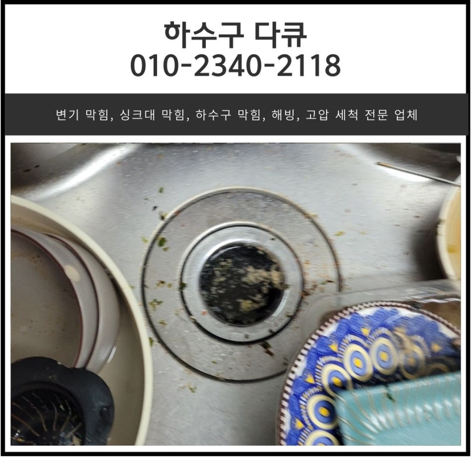
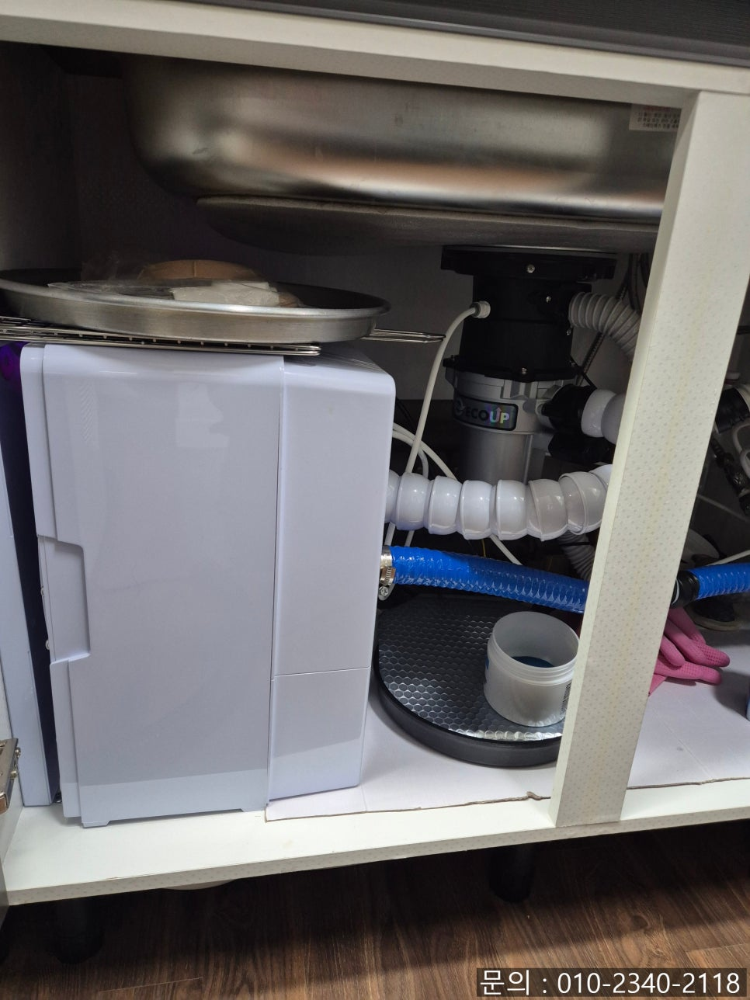
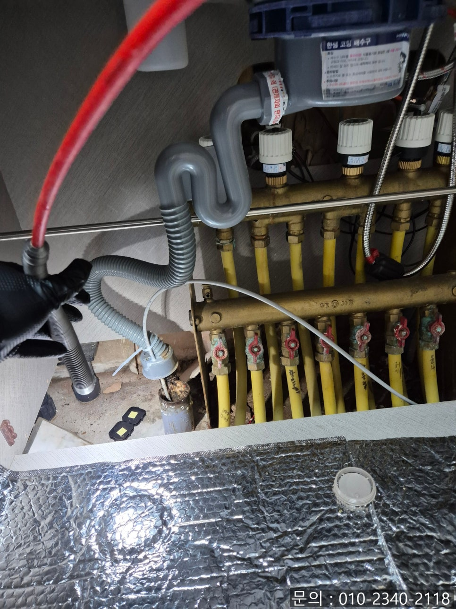
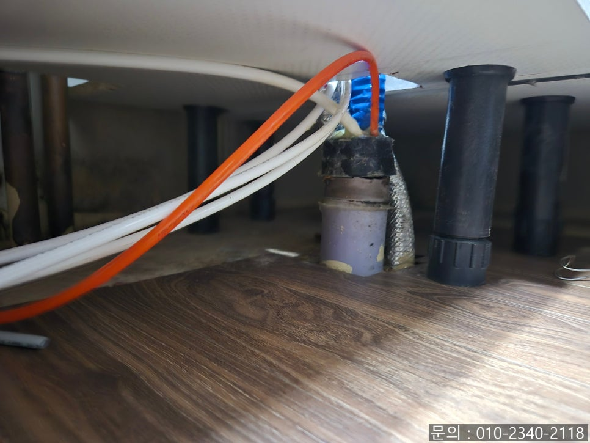
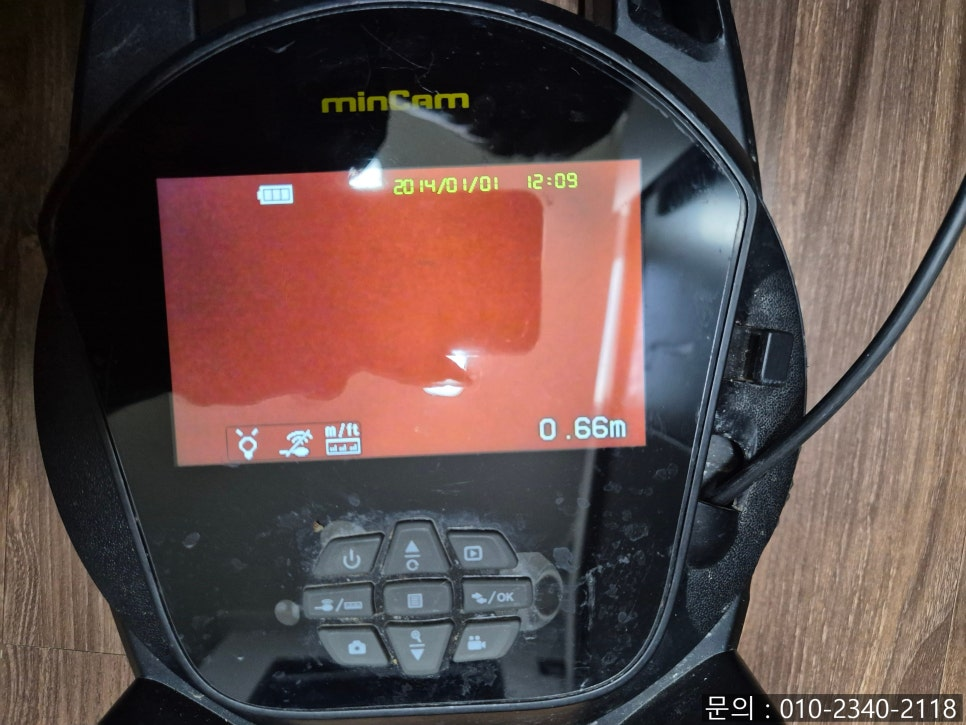
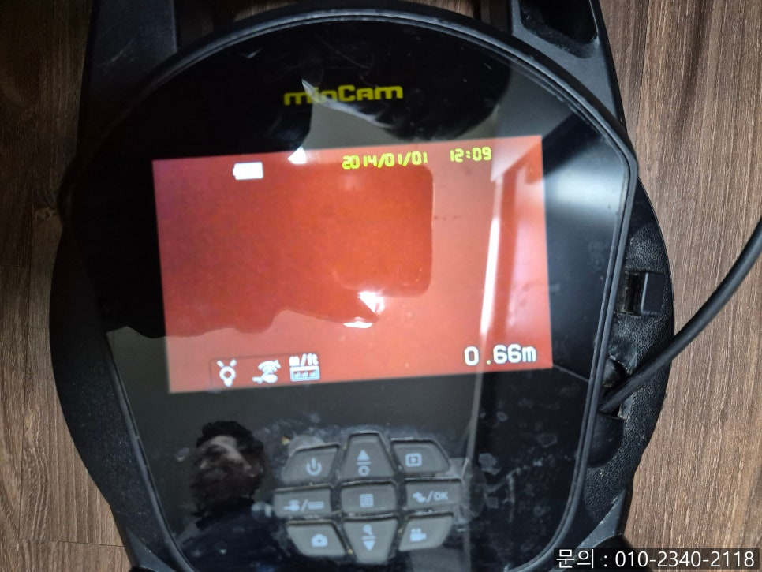
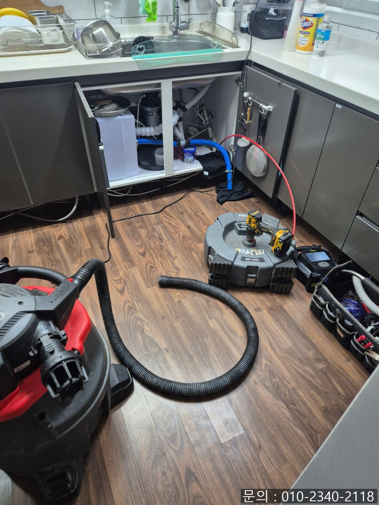

🏠 병점동 싱크대 막힘 반정동 아파트 하수구 배관 물 넘침 전문 업체
화성 병점 싱크대막힘 전문 시공 후기

📋 작업 개요
- 위치: 화성 병점, 병점, 화성
- 서비스 유형: 싱크대막힘, 하수구막힘, 배관막힘, 역류해결, 뚫는업체, 배관청소
- 작업 일시: 2025. 3. 6. 19:28
- 업체명: 하수구수사대 (010-5615-2118)
🔍 문제 상황
안녕하세요.
병점동 싱크대 막힘, 반정동 아파트 하수구 배관 물 넘침 전문 업체 하수구 다큐입니다.
집은 하루의 일과를 모두 마치고 돌아와 편안하게 쉬면서 재충전하는 소중한 공간입니다.
편안하게 쉬어야 하는 집에서 병점동 싱크대 막힘이 발생하게 되면 쉬지도 못하고 난처해지게 됩니다.
싱크대 배관 막힘은 우리 생활에서 자주 발생하는 골칫거리 중 하나인데요.
오늘은 병점동 싱크대 막힘을 해결하고 온 현장을 소개해 드리겠습니다.
반정동 아파트 하수구 배관 물 넘침 전문 업체 하수구 다큐로 연락을 주신 고객님은 아파트에 거주하고 계셨는데요.

🔎 원인 분석
💡 전문가 진단: 정밀 진단 장비를 사용하여 슬러지의 고착 여부를 판명하고 타격/세척 작업을 실시했습니다.
배수구 막힘으로 싱크대에서 사용한 물이 내려가지 않고 거꾸로 올라온다고 하셨습니다.
악취도 심하다 보니 뚫어 뻥을 사용해 여러 차례 시도해 봤지만 아무런 변화도 나타나지 않아 관리사무소로 연락해 도움을 요청하셨다고 해요.
하지만 관리사무소 직원분들도 하수구 관련 전문 장비가 없다 보니 손쓸 방법이 없어 전문가를 불러야 한다며 하수구 다큐 연락처를 주셨다고 합니다.
얼마 전에 같은 아파트에서 작업을 한 적이 있었는데, 그때 하수구 다큐의 명함을 받아 가신 분이셨나 봐요!
반정동 아파트 하수구 배관 물 넘침 전문 업체 하수구 다큐는 필요한 장비들을 챙겨 고객님 댁으로 신속하게 방문해 드렸습니다.
주방으로 들어가 보니 악취도 심한 상태였고, 배수구에 물이 고여있는 게 배관 내부에 이물질이 가득 차 있는 것 같았어요.
하부장을 열어보니 음식물 처리기를 사용하고 계신 걸 확인할 수 있었습니다.

🔧 작업 과정
음식물 처리기를 싱크대에 연결해 음식물 찌꺼기를 흘려보내면 잘게 갈아 버려주기 때문에 우리의 생활을 편리하게 해주지만 제대로 갈리지 않은 음식물 찌꺼기들이 배관에 쌓여가면서 병점동 싱크대 막힘이 발생하게 됩니다.
배수구에 고여있는 음식물 찌꺼기를 석션을 이용해 제거한 다음 내시경 카메라를 진입시켜 막힘의 원인을 확인해 보기로 했어요.
카메라가 배관 내부로 진입하자 기름 슬러지로 인해 내부의 모습을 전혀 알아볼 수 없는 상태였습니다.
내시경 카메라로 확인했을 때 붉게만 보인다면 배수구로 기름을 많이 버렸을 확률이 높아 고객님께 여쭤보니 집에서 고기나 생선을 자주 드신다고 하셨어요.
기름이 가득한 프라이팬을 키친타월로 닦아내지 않고 따뜻한 물을 이용해 그냥 흘려보낸 적이 많다고 하셨습니다.
뜨거운 물을 사용해도 많은 양의 기름이 배관으로 들어가게 되면 막힘이 발생할 수밖에 없어요.
기름 슬러지가 배관 깊숙한 곳까지 쌓여있는 상태이다 보니 플렉스 샤프트 장비를 사용해 청소를 진행하기로 했습니다.
동그란 본체에 연결한 전동드릴이 작동하면서 노즐로 빠르게 회전하는 힘을 전달하면서 작동하게 되는데요.
배관 내부로 들어간 노즐이 360도로 회전하면서 배관에 쌓인 이물질을 타격해 잘게 부서 주게 됩니다.
기름 슬러지의 경우 시간이 지날수록 돌처럼 단단해지다 보니 한 번에 제거되지 않아요.
그러다 보니 작업을 할 때 내시경 카메라로 꼼꼼하게 살펴보면서 청소를 진행했습니다.
반정동 아파트 하수구 배관 전문 업체 하수구 다큐는 기름 슬러지를 여러 차례 반복해서 없앤 다음, 혹시라도 남아있는 건 없는지 다시 한번 내시경 카메라를 이용해 꼼꼼하게 확인했습니다.


✅ 작업 완료
물의 흐름을 방해하던 기름 슬러지들이 모두 제거되고 깨끗해졌으니 물이 잘 내려가는지 테스트해 봐야겠죠?
많은 양의 물을 한꺼번에 배수구로 흘려보내 역류나 막힘없이 잘 흘러가는지 확인해 보니 시원하게 뚫린 걸 확인할 수 있었습니다.
경기도 화성시 효행로 1060 10층 1004-A246호




⚠️ 주방 싱크대 배관 막힘 예방 수칙
- ✅ 기름기가 묻은 식기나 프라이팬은 설거지 전 키친타올로 반드시 기름때를 닦아내세요.
- ✅ 주기적으로 싱크대 개수대에 뜨거운 물을 가득 받아 한 번에 내려 배관 내부 기름을 씻어내세요.
- ✅ 배수구 거름망을 미세한 필터로 사용하시고 음식물 찌꺼기가 틈으로 새어 들지 않게 관리하세요.
- ✅ 베이킹소다와 식초를 뜨거운 물과 함께 일주일에 한 번씩 부어주면 배관 살균과 막힘 예방에 좋습니다.
💡 핵심 정리
- 확실한 장비 작업(내시경 점검 및 샤프트 스케일링)으로 원인을 뿌리 뽑습니다.
- 작업 후 1년 이내에 동일한 부위 재발 시 100% 무상 A/S 서비스를 보장합니다.
- 서울 · 경기 · 인천 전 지역에 24시간 언제든 긴급 출동할 수 있도록 항시 대기 중입니다.
❓ 자주 묻는 질문 (FAQ)
🚨 화성 병점 싱크대막힘 문제로 고민이신가요?
정확한 원인 진단과 확실한 시공으로 재발 없는 해결을 약속드립니다.
24시간 긴급 출동 | 서울 · 경기 · 인천 전지역 | 1년 내 재발 시 무상 A/S